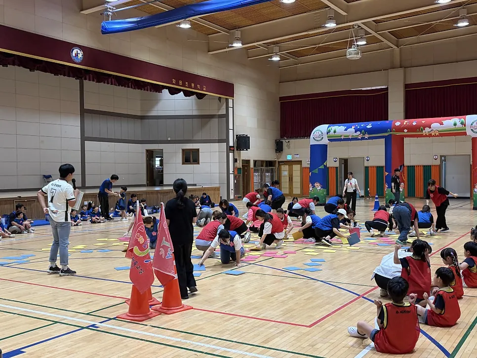

경기 남부 행사 준비 · 2026년 11월 8일
어린이집 발표회 준비 — 무대 · 음향 · 의상 · 순서표
어린이집 발표회 준비는 무대를 꾸미는 일보다 순서표를 먼저 만드는 일에서 시작합니다. 아이들이 어떤 순서로 나오고 들어가는지가 정해져야 음향, 조명, 의상, 대기 자리가 모두 맞춰지기 때문입니다. F&J 이벤트(펀앤조이 체육교실)는 어린이집 · 유치원 발표회의 의상, 무대, 진행을 함께하고, 무대 음향과 조명을 설치하고 철수까지 맡습니다. 이 글은 담당 선생님이 한 번 보고 따라갈 수 있게 준비 순서를 정리했습니다.

- 발표회는 순서표(출연 순서, 시간, 음악)를 먼저 만들고 나머지를 거기에 맞춥니다.
- 음향은 마이크와 스피커 위치, 아이들 목소리 크기에 맞춰 리허설에서 조절합니다.
- 의상은 갈아입는 시간과 장소를 순서표에 같이 적어 둡니다.
- 아이들은 대기, 입장, 퇴장 동선을 한 번 걸어 보면 긴장이 풉니다.
- 무대 음향과 조명은 설치와 철수까지 맡길 수 있습니다.
1. 어린이집 발표회 준비는 순서표부터
발표회가 흔들리는 이유는 대부분 순서가 정해지지 않아서입니다. 어느 반이 몇 시에 나오고, 음악은 무엇이며, 의상은 언제 갈아입는지를 한 장에 적어 두면 선생님 누구나 같은 그림을 보게 됩니다. 순서표에는 최소한 아래 칸이 들어갑니다.
| 칸 | 적을 내용 | 예 |
|---|---|---|
| 순서 | 출연 반 · 프로그램 | 1번 새싹반 율동 |
| 시간 | 시작 · 끝 시간, 전환 시간 | 5분 + 전환 3분 |
| 음악 | 곡 이름과 파일 위치 | USB와 휴대폰에 각각 백업 |
| 의상 | 갈아입을 시간 · 장소 | 대기실에서 순서 2번 전에 |
| 무대 | 소품 · 마이크 필요 여부 | 마이크 1개, 의자 없음 |
순서표는 인쇄해서 무대 옆, 음향 자리, 대기 자리에 한 장씩 둡니다.
2. 무대와 음향은 리허설에서 맞춥니다
발표회 음향에서 흔한 어려움은 아이들 목소리가 작게 들리는 것과 음악이 너무 크게 나오는 것입니다. 이 둘은 행사 당일이 아니라 리허설에서 맞춰야 합니다. 아이들이 서는 위치에서 마이크를 어디에 놓을지, 스피커를 어느 방향으로 둘지를 실제 소리로 확인하세요.
- 리허설은 실제 입는 의상, 실제 쓰는 음악으로 합니다.
- 마이크는 아이들 키에 맞는 높이로 두고 이동 동선을 확인합니다.
- 스피커는 객석을 향하게 두되, 무대 위 아이들에게 소리가 울려 돌아오지 않게 합니다.
- 음악 파일은 USB와 휴대폰에 각각 담아 갑니다.

F&J 이벤트는 무대 음향과 조명을 설치하고 철수까지 맡습니다. 발표회 · 송년회 · 행사장 규모에 맞춰 구성하니 장소 크기를 알려 주세요.
3. 의상과 대기 시간이 발표회의 변수입니다
의상은 발표회 날 가장 바쁜 순간을 만듭니다. 아이들이 옷을 갈아입는 데 생각보다 오래 걸리기 때문에 갈아입을 시간과 장소를 순서표에 넣어 두세요. 입기 쉽고 벗기 쉬운 의상, 신발과 소품에 이름 붙이기, 갈아입은 뒤 대기 자리에서 순서를 기다리게 하는 것이 기본입니다. F&J 이벤트는 어린이집 · 유치원 발표회의 의상도 함께합니다.
| 대기 단계 | 아이들이 하는 일 | 선생님이 하는 일 |
|---|---|---|
| 대기실 | 화장실 다녀오기, 의상 확인 | 이름표 확인, 소품 점검 |
| 무대 옆 | 입장 순서대로 줄 서기 | 손 신호로 입장 순서 알려 주기 |
| 무대 | 공연 | 객석 쪽에서 눈 맞춰 주기 |
| 퇴장 | 정해진 길로 퇴장 | 대기실에서 받아 주기 |
4. 조명은 눈부심과 동선을 봅니다
무대 조명은 아이들이 잘 보이게 해 주지만 너무 세면 눈부셔서 아이들이 얼어붙기도 합니다. 리허설 때 조명을 켠 채로 아이들이 서 보고 눈이 부신지를 확인하세요. 무대와 객석 사이 통로는 조명을 낮춰 걸려 넘어지지 않게 합니다. 어두운 무대 옆에서 대기하는 아이들이 길을 볼 수 있게 작은 불빛을 두는 것도 좋습니다.

5. 발표회 당일 체크표
| 시점 | 확인할 것 |
|---|---|
| 오전 | 무대 세팅 · 음향 · 조명 점검, 리허설 |
| 관객 입장 전 | 순서표 배치, 관객 자리, 안내 방송 점검 |
| 공연 중 | 다음 반 대기, 음향 담당과 순서 맞추기 |
| 끝난 뒤 | 아이들 인계, 소품 정리, 음향 · 무대 철수 |
발표회 규모와 장소를 알려 주시면 무대와 음향 구성을 정리해 드립니다. 서비스는 행사 · 대여 에서, 어린이집 · 유치원 프로그램은 유아체육 · 체험 에서 볼 수 있고, 상담은 견적 문의 로 받습니다.
아이들이 하는 수업 이야기는 어린이집 유아체육 수업 글에서 볼 수 있습니다.
자주 묻는 질문
발표회 무대 음향만 맡길 수 있나요?
네. 무대 음향과 조명을 설치하고 철수까지 맡습니다. 발표회 규모에 맞춰 구성합니다.
의상도 준비해 주나요?
어린이집 · 유치원 발표회의 의상, 무대, 진행을 함께합니다. 필요한 범위를 상담 때 알려 주세요.
리허설 시간도 잡아 주나요?
리허설은 음향과 동선을 맞추는 중요한 시간입니다. 가능한 일정을 상담 때 함께 정합니다.